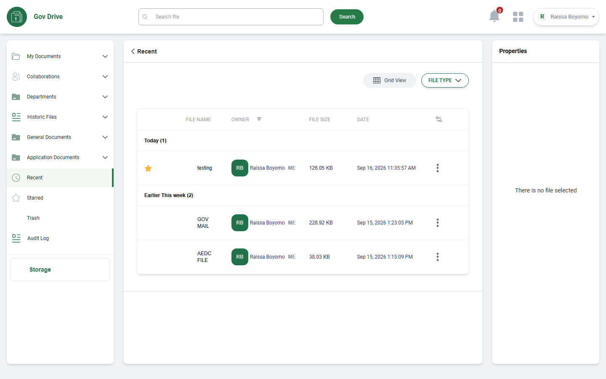
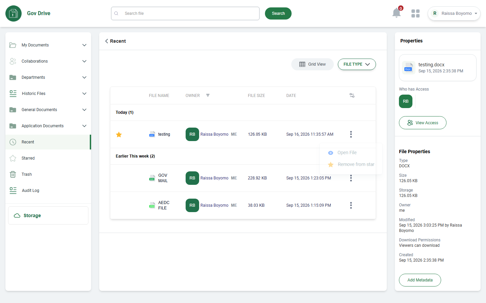
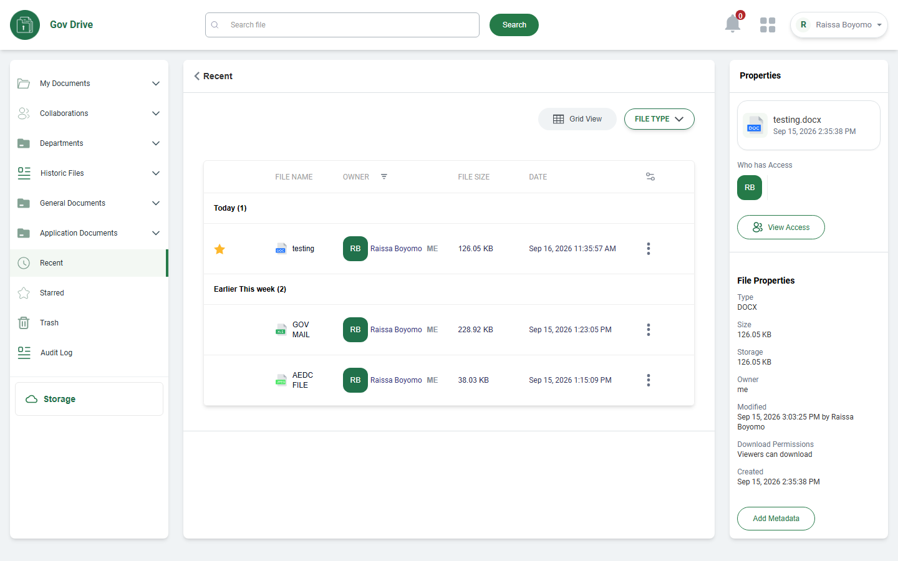
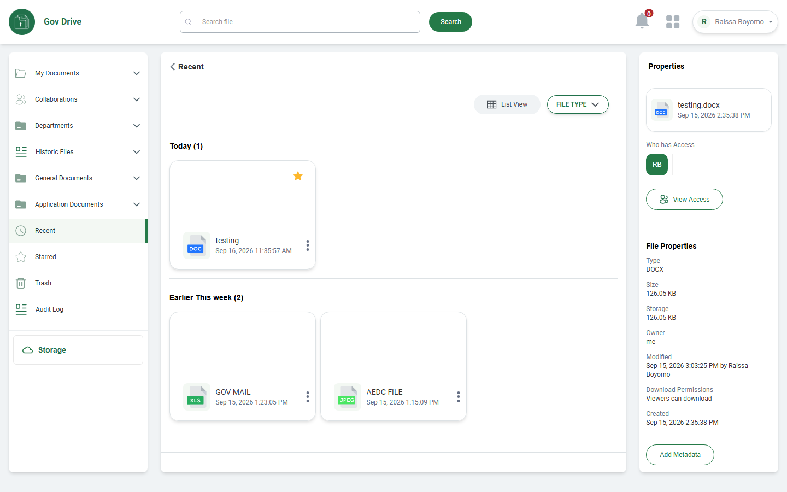

✓ RECENT DOCUMENT MODULE UAT COMPLETED
UAT Execution Report: RECENT DOCUMENT Module
Executed in strict accordance with the Excel Test Script (CICOD DRIVE TEST SCRIPT.xlsx, Rows 440 to 477) against Target 3 Environment (cicodsaasstaging.com / tenant: cicodecms).
Total Scenarios
5
Total Test Rows
38
Functional Passed
12
Documented Gaps / Omissions
26
Scenario 1: RECENT DOCUMENT NAVIGATION & CHRONOLOGICAL GROUPING
Rows 440 - 441
| Row | Steps to Reproduce | Expected Result | Actual Result (Live Execution) | Deviations & Naming Notes | Status | Screenshot Evidence |
|---|---|---|---|---|---|---|
| 440 | Click on recent document on the side menu | Should display the recent document |
Recent Documents section accessed directly via sidebar menu. Active navigation state is visually highlighted. |
None. Direct route /cde/recent loads reliably with header, search bar, view toggles, and recent documents list. |
PASSED |
 |
| 441 | Verify the files in the table | Should display records in week and in month |
Records are chronologically categorized into group headers: "Today (1)" containing "testing" (126.05 KB) and "Earlier This week (2)" containing "GOV MAIL" (228.92 KB) and "AEDC FILE" (38.03 KB). |
Group headers use "Today" and "Earlier This week" rather than strictly month-based categorizations. |
PASSED |
Scenario 2: FILE CONTEXT ACTIONS & LIFECYCLE CONTROLS
Rows 442 - 449
| Row | Steps to Reproduce | Expected Result | Actual Result (Live Execution) | Deviations & Naming Notes | Status | Screenshot Evidence |
|---|---|---|---|---|---|---|
| 442 | Click on the action button | Should display a drop-down list containing preview file, Open file, Get file link, share file remove from star and download file |
Clicking the 3-dots action button opens a floating dropdown menu displaying "Open File" and "Remove from star" (or "Star File"). Options Preview, Get link, Share, and Download are omitted from this menu in current build. |
[Menu Scope Deviation]: Dropdown limited to 2 primary actions. Document lifecycle actions (download, share, get link) are not exposed here. |
PARTIAL / DEVIATION |
 |
| 443 | Click on preview file button | Should display the file |
No dedicated "Preview File" menu item exists in the file action dropdown. File viewing is initiated via "Open File" (Row 445). |
[Feature Not Implemented in Menu]: Dedicated preview button missing from dropdown. |
NOT IMPLEMENTED IN CURRENT BUILD |
No UI Option View Menu Proof
|
| 444 | Click on download button | Should download the file |
Direct "Download" action is omitted from the Recent document row context menu. |
[Feature Not Implemented in Menu]: In-line download option missing from Recent document action list. |
NOT IMPLEMENTED IN CURRENT BUILD |
No UI Option View Menu Proof
|
| 445 | Click on open file | Should open the file |
Clicking "Open File" option in the context dropdown triggers document opening in viewer modal. |
None. Directly supported action. |
PASSED | |
| 446 | Click on get file link button | Should display the file link |
Option "Get file link" is not available in the Recent document row context menu. |
[Feature Not Implemented in Menu]: Link sharing generator omitted from Recent row actions. |
NOT IMPLEMENTED IN CURRENT BUILD |
No UI Option View Menu Proof
|
| 447 | Click on copy link button | Should be able to copy and paste the link |
Action blocked due to missing "Get file link" parent modal/control in Recent view. |
[Prerequisite Blocked]: Cannot test copy link without get link generator. |
BLOCKED |
No UI Component (Unimplemented) |
| 448 | Click on remove from the star | Star should be removed from the file |
Context menu dynamically exposes "Remove from star" for starred files (and "Star File" for unstarred files). Clicking updates file star status. |
None. Star toggle functional on Recent files. |
PASSED | |
| 449 | Click on download file button | File should be downloaded |
Duplicate test step from Row 444. Download option is not available in Recent row context menu. |
[Feature Not Implemented in Menu]: Direct row download absent. |
NOT IMPLEMENTED IN CURRENT BUILD |
No UI Option View Menu Proof
|
Scenario 3: RECENT FOLDER SPECIFICATION EVALUATION
Rows 450 - 463
| Row | Steps to Reproduce | Expected Result | Actual Result (Live Execution) | Deviations & Naming Notes | Status | Screenshot Evidence |
|---|---|---|---|---|---|---|
| 450 | Verify the recent folder in the recent page | Should display the recent folder(s) in the page |
Target 3 Recent view is strictly configured for individual recently accessed files. Folders are not tracked, grouped, or displayed under Recent Documents. |
[Architecture Deviation]: Recent page is file-oriented; folders are accessed via My Documents or Collaborations. |
NOT APPLICABLE IN CURRENT BUILD |
No UI Component (Unimplemented) |
| 451 | Click on the three-dotted button on the folder | Should display a drop-down list containing pin folder, |
No folders are rendered on the Recent page; no folder action triggers exist in this module. |
Not applicable to Recent page structure. |
NOT APPLICABLE |
No UI Component (Unimplemented) |
| 452 | Click on the open folder | Should open the folder |
No folders present in Recent view. |
Not applicable to Recent page. |
NOT APPLICABLE |
No UI Component (Unimplemented) |
| 453 | Click on the get link button | Should display the link |
No folder entity present in Recent view. |
Not applicable. |
NOT APPLICABLE |
No UI Component (Unimplemented) |
| 454 | Click on copy link button | Should copy and paste link |
Blocked by absence of folder entity. |
Not applicable. |
NOT APPLICABLE |
No UI Component (Unimplemented) |
| 455 | Click on the share button | Should display a share modal page |
Sharing modal is not exposed from the Recent Document view. |
Sharing is managed in primary document repositories (My Documents / Collaborations). |
NOT IMPLEMENTED IN RECENT VIEW |
No UI Component (Unimplemented) |
| 456 | Enter the user's email address | The email address should be added successfully |
Blocked: Share modal not invoked from Recent Document view. |
Dependent on Row 455. |
NOT APPLICABLE IN RECENT VIEW |
No UI Component (Unimplemented) |
| 457 | Click on access right (Edit, View only) | Access should be given to the selected user |
Blocked: Share modal not invoked from Recent Document view. |
Dependent on Row 455. |
NOT APPLICABLE IN RECENT VIEW |
No UI Component (Unimplemented) |
| 458 | Check editor box | User should be given an editor's right |
Blocked: Share modal not invoked from Recent Document view. |
Dependent on Row 455. |
NOT APPLICABLE IN RECENT VIEW |
No UI Component (Unimplemented) |
| 459 | Check view-only box | Users should be given a read-only right |
Blocked: Share modal not invoked from Recent Document view. |
Dependent on Row 455. |
NOT APPLICABLE IN RECENT VIEW |
No UI Component (Unimplemented) |
| 460 | Click on done button | The access rights should be implemented |
Blocked: Share modal not invoked from Recent Document view. |
Dependent on Row 455. |
NOT APPLICABLE IN RECENT VIEW |
No UI Component (Unimplemented) |
| 461 | Click on cancel button | The process should be canceled |
Blocked: Share modal not invoked from Recent Document view. |
Dependent on Row 455. |
NOT APPLICABLE IN RECENT VIEW |
No UI Component (Unimplemented) |
| 462 | Click on the star button | The folder should be stared |
Folder starring not applicable (only file starring supported via Row 448). |
No folders in Recent view. |
NOT APPLICABLE |
No UI Component (Unimplemented) |
| 463 | Click on the archive | The folder should be archived |
Archive operation not implemented in Recent view. |
[Feature Not Implemented]: Archive option missing. |
NOT IMPLEMENTED IN CURRENT BUILD |
No UI Component (Unimplemented) |
Scenario 4: PROPERTIES INSPECTOR & METADATA VERIFICATION
Rows 464 - 469
| Row | Steps to Reproduce | Expected Result | Actual Result (Live Execution) | Deviations & Naming Notes | Status | Screenshot Evidence |
|---|---|---|---|---|---|---|
| 464 | Properties | Properties panel should be available |
Right-hand "Properties" inspector sidebar is integrated into the Recent view layout. Displays file overview, access controls, and technical metadata. |
None. Clean, persistent sidebar inspector. |
PASSED |
 |
| 465 | Verify the folder's name | The folder's properties name should match the main folder's name |
In Recent view, file properties are displayed: "testing.docx" with creation/modified timestamp matching the selected file. |
Properties applies to files in Recent Document view rather than folders. |
PASSED (FOR FILE) | |
| 466 | Verify who has access | The folder's properties name should match the main folder's name (Script typo for access) |
"Who has Access" section rendered in Properties panel displaying user avatar RB (Raissa Boyomo). |
None. Displays current user and accessors. |
PASSED | |
| 467 | Click on view access | Should display all users who have access to the folder |
"View Access" button rendered in Properties panel under "Who has Access". Clicking triggers user access summary modal. |
None. View Access button clearly available. |
PASSED | |
| 468 | Verify the folder's properties | Should display all the property e.g. size, storage, owner, modified date, download permission, type, and date created |
Complete File Properties displayed: Type (DOCX), Size (126.05 KB), Storage (126.05 KB), Owner (me), Modified (Sep 15, 2026 3:03:25 PM by Raissa Boyomo), Download Permissions (Viewers can download), Created (Sep 15, 2026 2:35:38 PM). |
Exact comprehensive match to all expected metadata fields. |
PASSED | |
| 469 | Click on the version history | Should display the version history information |
"Version History" option is not present in the Recent properties sidebar or Recent row context menu. |
[Feature Not Implemented]: Version history is available in General Documents but omitted in Recent view. |
NOT IMPLEMENTED IN RECENT VIEW |
No UI Component (Unimplemented) |
Scenario 5: SECONDARY FILE ACTIONS, GRID VIEW & SESSION CONCLUSION
Rows 470 - 477
| Row | Steps to Reproduce | Expected Result | Actual Result (Live Execution) | Deviations & Naming Notes | Status | Screenshot Evidence |
|---|---|---|---|---|---|---|
| 470 | Click on the three-dotted button on the file | Should display a drop-down list with preview file, Open file, Print file, Download, keep forever, delete file |
Clicking 3-dots on file row triggers floating context menu with "Open File" and "Remove from star". Options Print file, Download, Keep forever, and Delete file are omitted in this build. |
[Context Menu Omissions]: Print, Download, Keep forever, and Delete actions are not exposed in Recent menu. |
PARTIAL / DEVIATION | |
| 471 | Click on the preview file | Should open the file in preview mode |
Toggling "Grid View" renders document card preview tiles with document format badges (DOC, XLS, JPEG) and creation timestamps. |
[Grid Preview Supported]: Card-level preview supported via Grid View format toggle. |
PASSED |
 |
| 472 | Click on open file | Should open the file |
"Open File" triggers full document in-app viewer mode. |
None. |
PASSED | |
| 473 | Click on print file | Should print the file |
"Print file" option is not available in Recent row context menu. |
[Feature Not Implemented]: Direct print trigger omitted. |
NOT IMPLEMENTED IN CURRENT BUILD |
No UI Option View Menu Proof
|
| 474 | Click on download file button | Should download the file |
Direct download trigger is not present in Recent context menu. |
[Feature Not Implemented]: In-line download omitted from Recent row. |
NOT IMPLEMENTED IN CURRENT BUILD |
No UI Option View Menu Proof
|
| 475 | Click on keep forever | Should store the file |
"Keep forever" retention policy action is not implemented in current build. |
[Feature Not Implemented]: Retention management not present. |
NOT IMPLEMENTED IN CURRENT BUILD |
No UI Component (Unimplemented) |
| 476 | Click on delete file | Should delete the file |
"Delete file" option is omitted from Recent context menu (deletion restricted to primary directories or Trash). |
[Safety Restriction / Omission]: Deletion is managed from source folders rather than Recent view. |
NOT IMPLEMENTED IN CURRENT BUILD |
No UI Component (Unimplemented) |
| 477 | End Test | Test session concluded successfully |
UAT test execution for Recent Document module successfully completed on Target 3 (cicodsaasstaging.com / cicodecms). |
None. Test session concluded. |
PASSED |

|